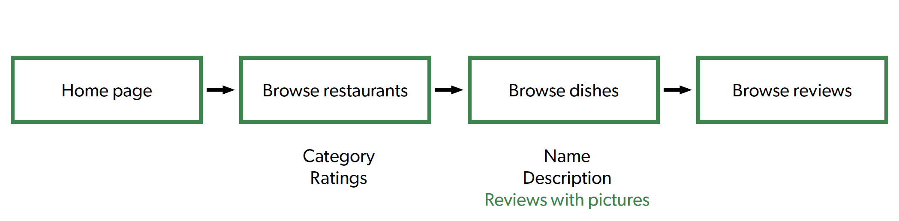

Review Section
A new feature design for the Uber Eats application
Overview: For this project, I worked individually to design a new feature for the Uber Eats existing mobile application in three weeks. I worked on the research of the Uber Eats application and came up with two new features that demonstrate the logic of the user interface, then chose one of the proposed features and refined its idea according to the received feedback from the teaching team. Eventually, I created a complete mockup for the review feature using ProtoPie and achieved my goal of helping users better understand and expect dishes by adding more information to the dishes based on user reviews, including ratings and pictures of the dishes.
Team: Yenan Huang (Individual project)
Duration: 3 weeks, January 2023
My Role: Researcher, Designer, Prototyper
Tool: ProtoPie
Scroll down to view more
01/ Research
At this stage, I analyzed the main purpose and target users of
Uber Eats and interviewed two target users for their thoughts
on the app to add to my knowledge of this application.
To investigate further, I conducted a heuristic evaluation of
the Uber Eats app and found that the lack of pictures of
dishes made it difficult for users to match between the system
and the real world because customers see the appearance of the
dish rather than the ingredient list when they order in
reality. Uber Eats also does not give customers enough control
and freedom to control their orders. If any errors occur,
users cannot modify their orders further by contacting the
restaurant.
To ensure that the new designs do not conflict with the
original design of Uber Eats, I analyzed the interface design,
interaction patterns, and user navigation framework
interactions of the application. This also helped users to use
the new features I designed without much burden.

Interaction within the navigation framework
02/ Feature Design
Based on feedback from the teaching team, I chose to design
the review section as a new feature for the Uber Eats app.
This new feature improves the flow of user browsing dishes and
complements the lack of information on dishes based on user
reviews, including comments, ratings, and pictures. In the
original process, users had to rely on other applications to
complete the information, whereas the new review session is
more in line with real-world conventions.
I then created the interactive mockup using ProtoPie to add a
new review section to the dish detail page and improved the
Uber Eats app's original interface for users to post reviews.

The original flow of user browsing dishes
The flow of user browsing dishes after adding new review feature